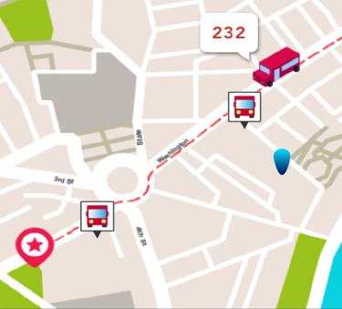

Washington and State

Line
Destination
Arriving
Eastbound
60
Randolph/
Harbor Dr
3 min
124
Navy Pier
5 min
Northbound
151
Devon/Clark
7 min
Southbound
J14
103rd/
Stony Island
7 min
124
Navy Pier
10 min
Reroute
6x
Jackson Park
Express
N/A
Out of Service
4
Cottage Grove
12:10am
20
Madison
12:10am
157
Streeterville/
Taylor
6:00am